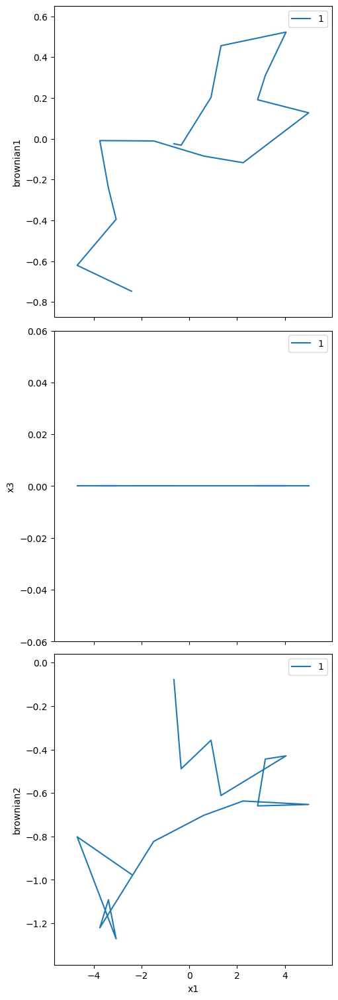
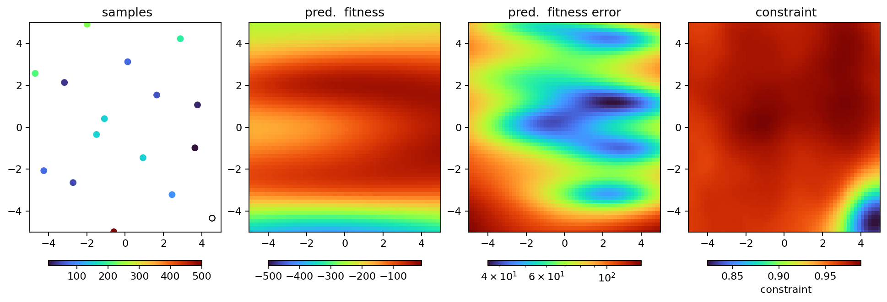

Passive degrees of freedom#
Passive dofs!
[1]:
from blop.utils import prepare_re_env
%run -i $prepare_re_env.__file__ --db-type=temp
[2]:
from blop.utils import functions
from blop import DOF, Agent, Objective
from blop.dofs import BrownianMotion
dofs = [
DOF(name="x1", search_bounds=(-5.0, 5.0)),
DOF(name="x2", search_bounds=(-5.0, 5.0)),
DOF(name="x3", search_bounds=(-5.0, 5.0), active=False),
DOF(device=BrownianMotion(name="brownian1"), read_only=True),
DOF(device=BrownianMotion(name="brownian2"), read_only=True, active=False),
]
objectives = [
Objective(name="himmelblau", target="min"),
]
agent = Agent(
dofs=dofs,
objectives=objectives,
digestion=functions.constrained_himmelblau_digestion,
db=db,
verbose=True,
tolerate_acquisition_errors=False,
)
RE(agent.learn("qr", n=16))
running iteration 1 / 1
Transient Scan ID: 1 Time: 2024-02-03 16:45:09
Persistent Unique Scan ID: '277af9d5-3991-482d-8596-2567f51fe819'
New stream: 'primary'
+-----------+------------+------------+------------+------------+------------+------------+
| seq_num | time | x1 | x2 | brownian1 | x3 | brownian2 |
+-----------+------------+------------+------------+------------+------------+------------+
| 1 | 16:45:09.6 | 1.498 | 0.364 | 0.001 | 0.000 | 0.041 |
| 2 | 16:45:10.2 | 0.834 | -1.058 | -0.006 | 0.000 | 0.326 |
| 3 | 16:45:10.6 | 2.618 | -2.496 | -0.079 | 0.000 | 0.299 |
| 4 | 16:45:11.1 | 4.322 | -4.832 | -0.249 | 0.000 | 0.356 |
| 5 | 16:45:11.5 | 2.226 | -3.721 | -0.351 | 0.000 | 0.443 |
| 6 | 16:45:12.0 | -0.517 | -3.930 | -0.271 | 0.000 | 0.446 |
| 7 | 16:45:12.4 | -1.274 | -1.282 | -0.171 | 0.000 | 0.580 |
| 8 | 16:45:12.9 | -3.569 | -2.516 | -0.200 | 0.000 | 0.105 |
| 9 | 16:45:13.3 | -4.640 | -0.166 | -0.270 | 0.000 | -0.078 |
| 10 | 16:45:13.7 | -2.726 | 0.879 | -0.269 | 0.000 | -0.286 |
| 11 | 16:45:14.2 | -4.079 | 3.209 | 0.230 | 0.000 | -0.541 |
| 12 | 16:45:14.6 | -2.430 | 4.643 | 0.150 | 0.000 | -0.849 |
| 13 | 16:45:15.0 | -0.765 | 1.975 | 0.267 | 0.000 | -0.911 |
| 14 | 16:45:15.5 | 0.467 | 3.008 | 0.083 | 0.000 | -1.167 |
| 15 | 16:45:15.9 | 3.659 | 4.138 | 0.188 | 0.000 | -1.029 |
| 16 | 16:45:16.4 | 4.377 | 1.783 | 0.271 | 0.000 | -0.949 |
+-----------+------------+------------+------------+------------+------------+------------+
generator list_scan ['277af9d5'] (scan num: 1)
/usr/share/miniconda3/envs/blop-py3.10/lib/python3.10/site-packages/bluesky/callbacks/fitting.py:167: RuntimeWarning: invalid value encountered in scalar divide
np.sum(input * grids[dir].astype(float), labels, index) / normalizer
trained model 'himmelblau' in 47 ms
[2]:
('277af9d5-3991-482d-8596-2567f51fe819',)

[3]:
agent.plot_objectives()
